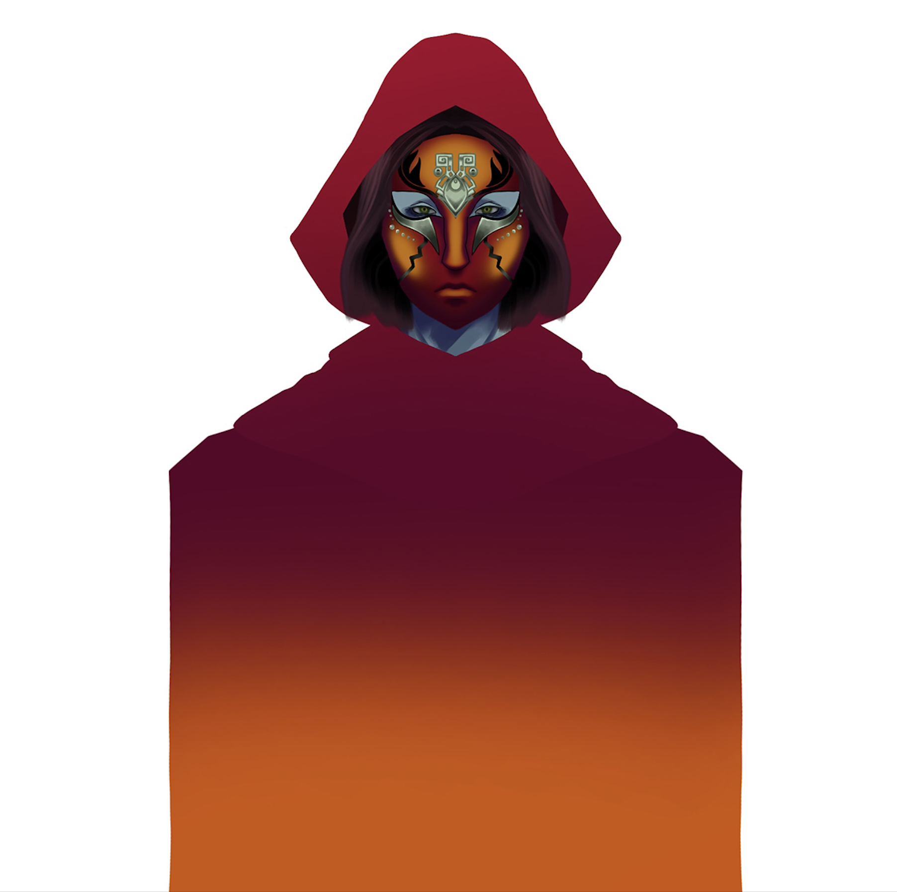
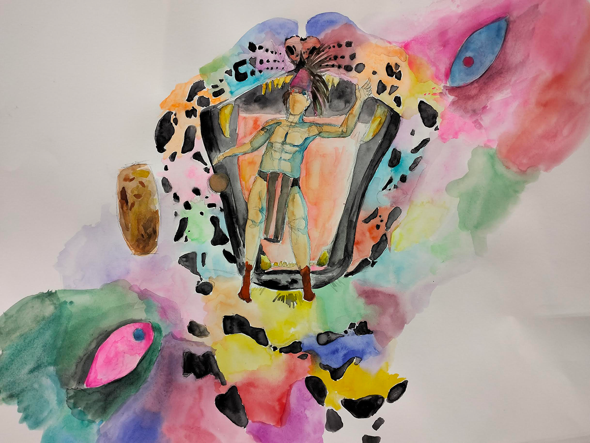
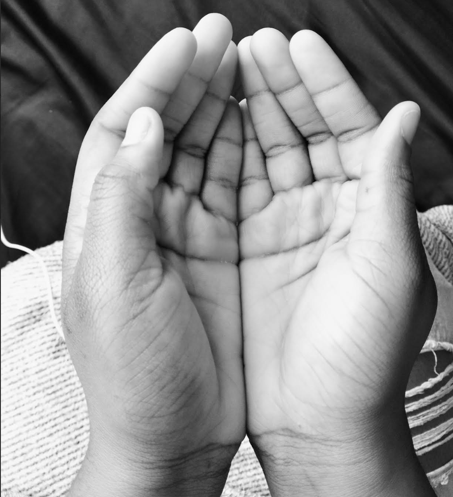

This collection brings together digital and traditional works that merge ancestral reference with speculative worldbuilding. The character designs draw from pre-Columbian civilizations — ceremonial dress, ornament, palettes, and motifs — while integrating original fantasy concepts developed for a novel in progress, including invented races, clothing systems, physiognomies, and cosmologies. The same approach informs the landscapes, creatures, and constructed settings, where research-based visual heritage and fictional invention co-exist.
Several environments are directly inspired by the cultural and natural landscapes of Guatemala, reflecting both personal origin and the enduring influence of Mesoamerican worldviews on this body of work. The collection positions heritage not as static history, but as a living source for imagining Indigenous futures.

An outcast disguised as a guardian. Her armor was designed to contrast the warm, red shades of the armor from the male guards. It's elegance and simplicty grants swift mobility and protection

A member of the royal council, dressed as such. Her fabrics are embroidered with the richest of jewels and threads, but not too luxuirous to conserve modesty

A pilot dressed in the traditional armor for male guards. The rich reds and copper contrast the blue shades that define the armor for the female warriors. This design incorporates less armored plates, meant to facilitate the movement for long-range combat

A setting found deep in a winter land, emotions clash with responsibility, with duty, and sorrow.

The highest-ranking guardian. An Acolyte of the Mother's descdendant. The mask, an ornament of tradition and power, paired with a modest cloak, offer a glimpse of the mysteries hidden within
An instrument of power, producing a melody of war, a resonance of strength, a call for a warrior.
.png)
Painted by sunlight, the violin becomes one with nature.

Engulfed by a blend of colors, the mayan warrior prepares himself for a game of life and death.

Driven by duty, this titan protects the delicate ecosystem around it, a creature of strength, resilence, and power no mortal can fight

Process sketch of the Skull Titan

Inspired by the illustrations and tales of Xibalba, the underworld of the Mayan culture, this landscape incorporates elements from tales and combines them with the scales of life and death from Ancient Egyptian mythology, producing a new story
“There is nothing wrong with creating a fantasy out of reality”
What the Hands Remember 2025
Sensorial memories are a language of their own, spoken through the textures of sand, the scent of spice, the fragrance of perfume, and the gesture of hands. Rooting from a cultural journey of the UAE, these paintings gather the artist’s experience in Abu Dhabi and offer a multi-sensory conversation. Stripped of skin tones, each hand is a vessel of human presence, with a bowl that mirrors the contents grasped, and whispers an invitation for the curious to engage.

These hands collect one of the essence attributes to Abu Dhabi, one of the most abundant substances

For this painting, the hands seem to be holding nothing, but the fabric of the canvas is soaked with a rich fragance which is a dominant product sold found in the emirates.

In many of the Souq found across the emirates, one can find a variety of containers and bags filled with rich scented spices, the third essence chosen to speak for the culture of Abu Dhabi

A photograph of one of the hands chosen as reference for the scented painting.